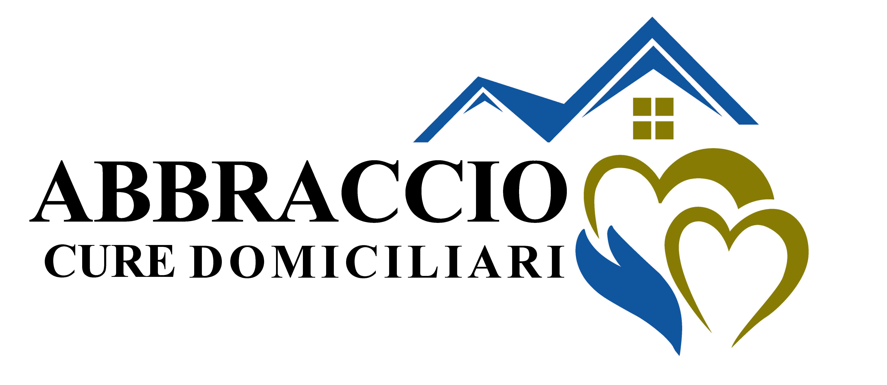

Raccontaci cosa serve.
Scegli un servizio o lasciati guidare. Puoi anche chiamarci per parlarne.

ABBRACCIO CURE DOMICILIARI · ROMA
Competenza, ascolto e una presenza su cui contare.
Infermieri, specialisti ed esami, nel comfort di casa.
Più di una prestazione.
Un punto di riferimento.
COSA POSSIAMO FARE PER TE
Trova la risposta più adatta al tuo momento.
Apri una categoria per consultare le prestazioni.
DENTRO ABBRACCIO
Conosci i servizi attraverso i video
e le immagini selezionate per te.
Una selezione dei tuoi video e delle immagini ricevute, organizzata per servizio.
ABBRACCIO × SALUS GROUP
Un sito dedicato a badanti, colf e assistenti familiari. Esplora il percorso per la tua famiglia in uno spazio separato, con il supporto di Abbraccio e Salus Group.
ASSISTENZA FAMILIARE · TUTTA ITALIA
IL TUO BENESSERE, OGNI GIORNO
Ausili, dispositivi e articoli per la quotidianità.
Un portale dedicato, con carrello e percorsi per acquisto e noleggio.
SEMPLICE, DALL’INIZIO
Scegli un servizio o lasciati guidare. Puoi anche chiamarci per parlarne.
Il centro verifica la richiesta, la zona e le disponibilità e ti chiarisce i costi.
Concordiamo i dettagli della prestazione e il percorso più adatto alla tua famiglia.
LE PERSONE FANNO LA DIFFERENZA
Entra nella rete Abbraccio. Cerchiamo infermieri, OSS, medici, badanti, assistenti familiari e colf.
Presentati, raccontaci la tua esperienza e le zone in cui sei disponibile.
Apri il modulo di candidatura Un percorso dedicato a ogni professione.CI SIAMO, ASCOLTIAMOCI.
Via di S. Maria Ausiliatrice 4/B, Roma
info@abbracciocuredomiciliari.it